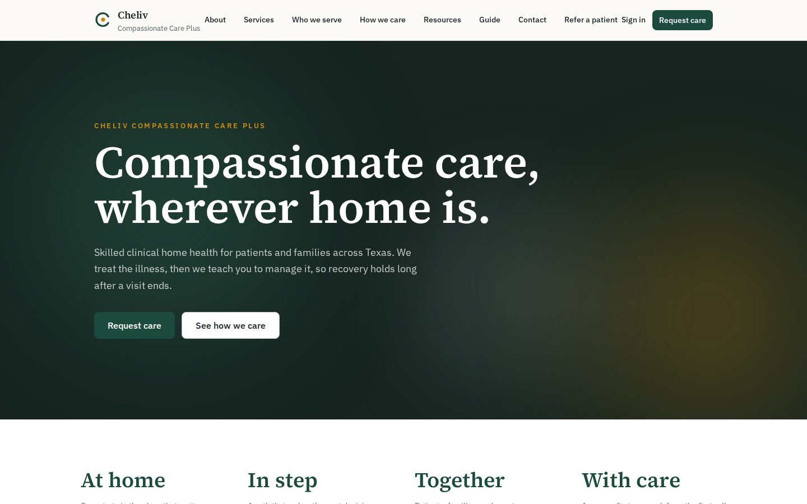
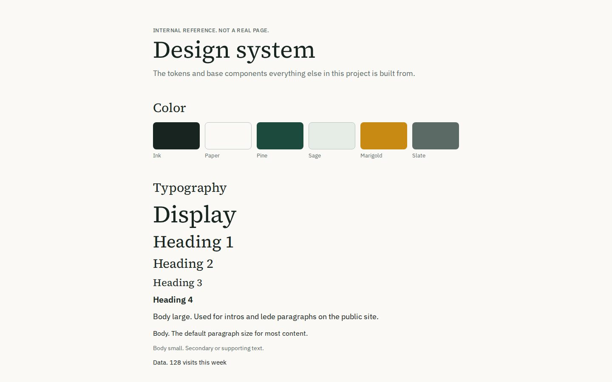
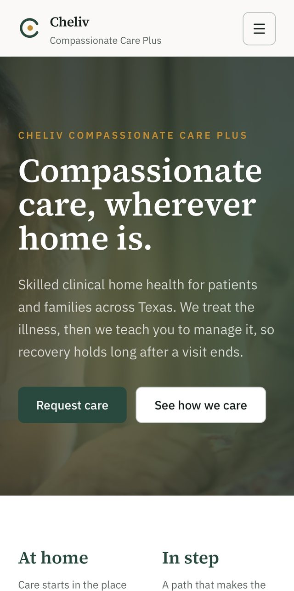
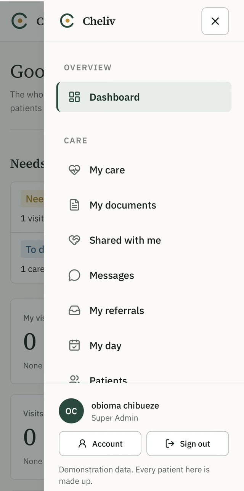

Cheliv Care Platform
A home health organization needed one identity with two sides: a calm public website and an internal application where every person sees only what they are allowed to see.

The brief
Compassionate Care Plus Inc. is a home health organization in Texas. It needed two things that share one identity: a public website where a family can ask for care without filling in a wall of forms, and an internal application where patients, families, caregivers, nurses, coordinators and administrators each see exactly what they are allowed to see and nothing else.
This is the second project I have built for this organization. The first was a marketing site made during training, which is still on this site as Cheliv Compassionate Care. This one is a different scale of problem: a permissions heavy system where a mistake is not a visual bug, it is somebody seeing a record they should not see.
Where it honestly stands
It is a development build running on synthetic data only. No real patient information exists in it, and the repository says so on the first page. The public deployment is a demonstration. I do not call it HIPAA compliant, because that is not something code alone can make true. It is designed with healthcare security requirements in mind, and the remaining work, such as an approved malware scanner, a restore drill, retention periods and legal review of the public notices, is written down as a production gate that has to be finished before real records are ever stored.
I think a portfolio is stronger when it says this plainly. The engineering is real. The compliance work is not finished, and I know exactly what is left.
The system
How a request travels through the platform, from a page to a record and back to an audit entry.

The size of it
Counted from the repository, not estimated.
- About 23,000 lines of TypeScript. Forty five page routes across the public site, the staff application and the portals.
- Twelve verification scripts. Each one signs in as different roles and tries things it should and should not be allowed to do.
- Fifty one documents. Architecture, role rules, audit rules, deployment, incident response, backup and restore, and handover guides written for a non technical owner.
Six ways in, one rule
Each kind of person gets their own door, and each door shows less than the one before it.
- Staff application. Command centre, patients, care teams, a scheduling board, visits, care plans, tasks, referrals, documents, an audit log and a staff directory with account creation.
- Caregiver portal. A phone first “My day” screen: own visits today, check in and out, a task checklist, and one short factual update per visit that never becomes a clinical note.
- Patient portal. Next visits, care team, active care plan and own documents. Read only. Patients can also message the care team in one private conversation.
- Family portal. Family members see only what the patient has chosen to share, recorded as a consent that the office can withdraw at any time.
- Referral partner portal. A hospital or physician office can submit a referral and see only the status of referrals it submitted. No patient records, no office notes.
- Public site. Home, six service pages, who we serve, how we care, resources, a user guide, and a request care form that saves to the database and notifies the office.


Why access is checked on the server, three times
Permissions are rows in the database, not a hard coded list, so changing what a role can do is a data change. Every check goes through one file so there is one place to audit.
Security work that shipped
- Staff sign in with an authenticator app. Time based codes, ten one time recovery codes stored only as hashes, and authenticator secrets encrypted with AES 256 GCM before they reach the database.
- Account recovery. One time tokens that expire in 20 minutes, a generic response that never reveals whether an account exists, and every session revoked after a password change.
- Sign in protection. Five failed attempts pause an address for 15 minutes. Sessions expire after seven days and each account is limited to five.
- Documents behind a scan gate. Files start hidden. Only a separately authenticated scanner callback can release one, and a scanner outage leaves files hidden rather than released.
- Audit that respects privacy. The log records that a message was sent or a record was viewed. It never stores what the message or record said.
- An installable app that never caches private data. The service worker only caches static assets and a generic offline page, never HTML, API replies, messages or document downloads.
- Spam protection on the public form. Cloudflare Turnstile checked on the server, plus a honeypot field.
How I checked it
Every round of work ends with the verification scripts, and each round also breaks rules on purpose to prove the checks can fail. When the caregiver portal shipped, eleven rules were broken deliberately and each one was caught. The family portal round did the same with nineteen. The main access script was at 668 checks when I last recorded it.
The most useful lesson was small. The phone menu drawer would not close properly, and the first fix did not work. The real cause was that a flex class on the dialog element beats the browser’s own hidden default. It took two files to fix once I understood it, and I wrote the cause down so I would recognise it again.
How it was built
I made the product decisions, wrote the rules about who can see what, decided what ships in each round, and ran every check and click through on my own machine before moving on. The repository includes the handoff documents that keep the work consistent from one session to the next.
What I would do next
Finish the production gate: choose and test a real malware scanner, run a restore drill, get the retention periods and public legal notices approved, and replace the stock photography with the organization’s own. Real email delivery also waits on a verified sending domain.
Need a system where access really matters
Permissions, audit trails and plain language handover are part of how I build.